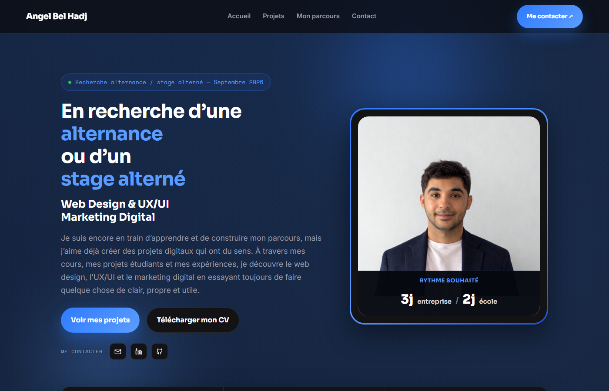

Portfolio personnel
Design, développement et structuration d’un portfolio professionnel
Portfolio développé pour présenter mes projets, mes compétences et mes expériences à travers des études de cas interactives.
Contexte
Le portfolio que vous consultez actuellement a été conçu et développé pour présenter mes projets académiques et professionnels de façon claire, à destination des recruteurs.
Objectifs
Créer un site rapide à parcourir, où chaque projet est présenté comme une vraie étude de cas plutôt qu’une simple liste, avec une identité visuelle cohérente et un accès direct à l’essentiel.
Design & UX
- Thème sombre, cohérent sur l’ensemble du site
- Hiérarchie visuelle claire : titres, sous-titres, badges de catégorie
- Cards projets avec système de catégories réutilisable
- Pages projet construites comme de vraies études de cas
- Navigation simple, pensée pour réduire le nombre de clics d’un recruteur
Développement
Le site est développé en HTML, CSS et JavaScript, sans framework, avec des composants réutilisables (cards, badges, sections de type « étude de cas ») répétés d’un projet à l’autre pour garder une cohérence visuelle.
Fonctionnalités
Architecture du portfolio
Une page d’accueil présente les projets sous forme de cards, chacune reliant vers une page dédiée construite comme une étude de cas (contexte, réalisations, rôle, compétences).
Responsive
Le site est pensé pour rester lisible sur desktop, tablette et mobile : les grilles de projets s’adaptent (jusqu’à 4 colonnes en desktop, 2 en tablette, 1 en mobile) et les boutons restent dimensionnés pour un usage tactile.
Stack technique
Aperçu
Mes projets
La grille de projets principaux, avec badges de catégorie.
Page projet
Une étude de cas type, avec hero et navigation.
Version mobile
Le hero et la navigation adaptés à un écran mobile.
Compétences & apprentissages
Ce projet m’a permis de travailler la présentation de mon travail comme un vrai produit : hiérarchisation de l’information, cohérence visuelle entre les pages, et itérations successives pour rendre chaque étude de cas plus claire et plus rapide à parcourir pour un recruteur.